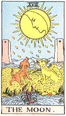
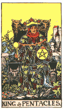

Tonight would be the night. She had. realized that unconsciously since the last attempt; that she had failed for the last time. But now, sitting alone on a swing, under the bright sunshine of late spring that was more truly summer, Jennifer Benchley first dared think that thought consciously. She hugged her worn beige, raincoat about her thin frame, and shivered in the warmth of the sun, with an almost sexual thrill of anticipation.
The voices of children disturbed her pleasurable unfocused thought, coming from the overgrown churchyard at her back, the hateful boasting sounds of little boys, talking loudly in their gutter parlance, half swearing, half vapidity. Jennifer opened her eyes, and looked at her watch, a battered old men's analogue, with a black pigskin strap, almost as old as she. It was — she read the time faster than most in this digital age — a quarter past two. Truants then, and nothing new about that, finding hide-and-seek, and dares end fights among the graves a better way to pass the day than sitting bored at a desk.
She did not object to that — precious little chance in the closing years of the eighties that they would have jobs waiting for them when they finished school, so they might at least enjoy leisure now, and have learning open to them later. No, it was their action of desecration, not of the churchyard, but of the tranquillity of the day, the spoiling of a beautiful dream by trampling it in the mud of everyday ordinariness.
She stood up, and walked across to the broken-down, ivy covered wall that divided the park from the churchyard, and stood in the middle of a large breach in the wall, amidst the fallen blocks, looking for them. A flash of colour, a red T-shirt, marked out one of the urchins, as he crouched behind a gravestone, that now stood askew, and as she watched, the two others moved up to him.
“What you got there?” one demanded of the one who had tried to hide himself. There was a brief scuffle, as it was revealed that red-shirt had made a stash of cigarettes there, and his companions impressed upon him the virtues off sharing.. After this settled down, and the sharing begun, one of the three noticed that they were not alone. Jennifer felt sickened by the weasel look of fear on the face at the prospect of discovery and the look of sheer bewilderment that followed.
Reluctantly, she entered the churchyard, feeling vulnerable in a space dedicated to the cause of Heaven, but she took care not to show that as she stormed up to the huddled trio.
“What do you think you are doing here?” she snapped at them.
The smallest broke and. ran, encouraging the next of them to flight. The third, deserted stood only long enough to yell defiantly “I'll tell my Dad on you.” And then they were gone, across the far wall, and away. She didn't care how long that would last, or whether that last threat had been in vain or not: now she would have to move on to some further place where peace yet prevailed. She checked the time again, and decided that her time of peace was too short now to find another place before her first appointment.
Her home, such as it was, was a seamy, two-room apartment, one of four that made up a pre-wars semi, shabbily furnished, badly in need of decoration, and she stayed away from it as much as she could, and it seemed strange to return to it so early in the day. She flung off her raincoat, and her shabby shoes, showing that as well as patched blue-jeans, she wore an outsize man's shirt, artlessly gathered to fit, the collar and cuffs worn to show the stiffening within. Barefoot, she stayed on the worn, greasy rugs, rather than the bare boards, and went to fetch water for her kettle.
The bathroom floor was linoleum, splashed with water, and around the toilet, vomit, slowly encrusting the bowl. She guessed the culprit to have been one of the drunken friends that Barry-down-stairs — he had never offered them his surname — always seemed to be entertaining. If the mess was not cleared out, as like as not would be the case, she would have to do it herself before she would use the toilet.
The kettle full, she returned to her room, and selected a tea from her collection, letting its aroma clear her nostrils before pouring a generous spoonful into the pot. Then, while she waited for the kettle to boil, she began to get ready for her afternoon's work. Her casual clothes she flung into her bedroom, and shut the door, to hide the havoc there, before pulling out a new set from a sideboard cupboard. She pulled on the dress gently, as if its poor fabric were the finest of silks, and wound a black cloth around her head as a yashmak A small cardboard box yielded up rings and other costume jewellery for her to adorn herself heavily, and the transformation was complete; she was now the person advertised on the bell-push at the front door, Lady Fatima, psychic.
She was not ashamed — it was a source of money, a welcome supplement to the pittance that was all the government could afford to give to the millions of unemployed — at least she gave a service that few others in her trade might — accurate foretelling and workable love charms, or curses. She knew she had been the instrument of fourteen deaths in the past year, and did not care; it had kept her in food, and the more expensive items her greater work required. She lifted the veil she wore, and sipped at her tea, before deploying the final items she would require, a tarot, a crystal ball, and a great leather-bound tome of some age, that was actually a Victorian guide to ornithology, but the presence of which added some weight to her performance.
At three, her first caller arrived, a shabby-genteel old lady, whom she knew only as Emily (“Let's not use surnames, dear, they're so stuffy.”), but whom she suspected of being the wife of an eminent academic who might disapprove of her practise. She sat down opposite Jennifer, across the table, that bore book, crystal and deck
Then, like some co-conspirator, she leaned over the table, regardless of the equipment there, and said, “Jenny, it's improving.” Emily had inoperable cancer, and unable to afford treatment, had come to her for healing, and had found it. Jennifer wondered what her doctor had thought when he had made that discovery.
“That's very good. Now, let me examine you.” Jennifer took one frail wrist, as if to take the pulse, but looked beyond her patient to the dressing-table mirror. There, by the grace of her witch-sight, she saw the auras of herself and her patient, the former strong and blue, nearly engulfing the red-flecked aura that Emily projected. But there was less red than there had been, and what there was was more tinged with orange, confirming the official diagnosis.
“Yes, it is getting better, but it still needs treatment.”
She stood behind the old lady, and put her hands on her brow, and began to intone what she told Emily was a prayer for healing — which it was, if not addressed to whom she might think, and after the ritual, she presented her with a small box of tablets to take, in exchange for a ten pound note.
Normally she would spend the next half hour or so talking over a cup of tea, letting Emily reminisce about her youth, but that day she had no time, and apologized all the way to the front door.
Emily had hardly hobbled to the gate, when it was opened by a young man, who smiled at her as she passed, and then came down the path. Jennifer waited at the door for him.
“Are you Fatima?” he asked, as if he knew already.
“Yes. Come in — You're Doug Sanders — right?”
“Right.”
There was silence as she ushered him into her room, and sat him down at the table.
“What do you want me to do?” she asked.
“Talk to me, read my: future, reassure me. Even if you're a fraud, you should be able to be sympathetic. If I were the religious type, I'd be talking to the chaplain. You know…”
“I'm flattered. Would you like a cup of tea?.”
“Yes, please. And could you tell me what your name is, your real one. I feel stupid using a show-name.”
“Jennifer, but you can call me Jenny. Sugar?”
“No, thanks.”
Jennifer set out another cup and left the kettle to its own devices. She sat down across the table from Doug who made no move to continue the conversation. She took up the Tarot.
“Would it be easier to use these?”
He nodded, and she fanned the cards, drawing one forth, and setting it on the table, between them.
“The page of pentacles — this signifies you — a student, I presume.”
“That's right, though it wasn't a difficult choice, not in this town. Now what?”
“Ask a question of the cards as you shuffle them, and then cut the deck thrice — to the left, and hand them back to me.”
“Out loud?”
“Not if you do not wish to say.”
He took the cards, handling them clumsily as he followed the instructions, and Jennifer sensed that he was glad to hand them back. The kettle switched itself off with a loud click in the silence, and she attended to that before returning to deal out the cards which fell thus
| , |  , , |
||
| , | , |  , , |
, |
 , , |
|||
| , |
“Interesting,” Jennifer observed, “Look how many of the Greater Trumps there are, strong forces at work, in you or your life; the minor cards…”
“But to their meaning, covering you, the seven of wands inverted, shows the general atmosphere surrounding your question — I guess you don't want to say what that was?”
She looked up and Doug nodded in assent.
It means you are indecisive to the point of incurring loss that you could otherwise have prevented and crossing you, the card means weakness, yielding to temptation, maybe to make the decision you should long ago have made.
“Beneath you, at the heart of the matter, the Hanged man, a period of transition, an about turn in your attitude, and behind you, passing out of your life, the Magician, signifying self-reliance, self-determination; and ahead, comes disappointment, the Star inverted, before you, is what will happen, promising but brief happiness, and crowning you, the Moon, warning of insincerity, disgrace, and falsity in friendship which may happen.
“The gloomy outlook of the cards is mirrored in your heart, your fears are represented, by death — disaster, loss and the severing of friendship, though not, I assure you, physical death — the card cannot foretell that. And yet, your friends think — the Ace of pentacles — that you have what you seek, and are fulfilled; something, you can only hope for — the ten of Cups — signifying peace and happiness.
“As to the final outcome — the Ace of Wands, a beginning has been made, with hopeful prospects; showing that the uncertainty surrounding you is a foundation on which something greater shall be built. In short, your present predicament is but the first step on the road towards the goal you seek.”
Jennifer lifted her eyes from the cards, and met Doug's eyes, as he too looked up.
“Yes,” he said, in a voice that nearly broke, “all the facts to date are correct, I believe you, Jenny, I honestly do.”
He reached out across the table, and caught her hand in his, his grip tight, as if he sought a reassurance, some where to cling, bearing out the message of the first two cards, and in his eyes, an eagerness for something, and a sadness.
“You could not love me,” she said, voicing what she feared was his intent, borne out by the cards.
“No, it's not you, but it is what I asked about. No, there's someone else, but…” he sighed, and his eyes became hard to read. Slowly, he relinquished his grip on her hand, and Jennifer gratefully withdrew from him.
“Sorry,” he said, “I just… thank you, very much, I'm sorry I overreacted, that's all.” He rose as if to leave, but Jenny restrained him holding his cuff.
“It's all right. I understand, I promised you some tea; it should be ready now.”
She poured two cups, and set one before her client, while nursing the other. He took the cup, and sipped from it, setting it aside to cool.
“How did you get into this business?” he asked.
“It was something I got in to while I was a student — it was a hobby then, fortune telling for friends, and later I got involved in the whole witchcraft thing. Do you remember the black magic affair at King's back in '85?”
“Heard of it — it was just before I arrived, so I didn't get the full details.”
“I was one of them, though I never attracted official attention. Then when I left, and couldn't get a job, well, this is what I did. It passes the time, and gets me some money.”
“Do you believe in it all?”
“It's not belief when it works — though what it is I couldn't say. I just follow the instructions, and I get the right answers.”
“I'll believe that — that reading was no mass-produced thing like the horoscopes in the papers…… Are you going to keep that ridiculous veil on while you drink your tea?”
Jennifer started with the cup halfway to her lips.
“Yes,” she answered, “The veil isn't just for show. I'm disfigured.”
“Oh, gods. I'm sorry.”
“It's all right, I'm used to the way I am. This veil is all I ever use to hide it, and that's only where money's at stake. Otherwise — well you can guess what would happen. That little old lady you opened the gate for — would she come back to this?”
She removed her veil, glad to be free from its stifling tightness about her nose, and looked for the reaction. It was as she had guessed from him; shock and pity for an instant, then overwhelming sorrow.
“You would, have been beautiful, how did it happen?”
“Motorway pile-up when I was fourteen… I nearly died at times I wished I had. My family couldn't afford expensive treatment, and I had to use cosmetics. When I left school I even stopped bothering with that.”
“Like shaving,” he joked, indicating his ill-kempt beard.
“So I adopted the Mysterious East as a disguise, and cheaper than cosmetics. And it enables me to keep my clients. That little old lady — this face would hardly reassure her that I could cure her cancer.”
“But if you can cure her — why not your self. Or…”
“No, I'm not ripping her off with false hopes — She is actually getting better, out cancer is a disease, that needs healing and this,” she rubbed the scarred mass of her chin, “this has healed, after a fashion.”
She smiled, and took a draught of her tea, began to pack away the cards on the table.
“Otherwise I could earn a lot more than I do, if you get my drift,” she added.
“I'd wondered about that, when I saw your ad in the shop window down the road.”
“Is that why you came?”
“It's why I nearly didn't.”
“Thanks — you didn't seem that type.”
“And thank you, too.” He drained his cup, and checked the time and then looked very seriously at her.
“It's time for me to go I'm afraid, but before I do, I'm going to be very stupid. May I kiss you good-bye?”
“As you wish…” Surprised, she rose, and walked with him to the door, and there, he kissed her clumsily, yet no worse than, her own scarred lips allowed, and his embrace held some of the desperation she had felt before, when he had taken her hand.
“Thank you, for all your help,” he said as he broke free, then he pushed a wad of notes into her hand, and fled.
Jennifer watched him walk away, standing at the window until he was gone from sight, before counting the money she had been given — ten pounds, all in ones, the agreed upon price for a consultation. Had he expected a whore? she didn't know — maybe companionship and consolation of any kind.
“Damn students,” she muttered affectionately to herself, as she put :the money away, and replaced her veil. In her mouth the taste of his kiss mingled with that of milky tea., and stayed, dull and fluffy.
She checked the time — three-forty — and twenty minutes yet until the last caller of the afternoon session, and then, business would be over. Three was a large number of afternoon sessions, many days passed without any — the evenings were more popular, by tradition, it seemed. She smiled. If the night's efforts were successful, she might never have to bother with such things again. She picked up a paperback that she had half read, and went into the bedroom, and sprawled on the bed to read, to pass the time.
It was ten past the hour when the doorbell rang, interrupting Jennifer in the middle of scene in which she had become deeply involved, and she swore as she threw the book down, and went to answer it.
The caller was a girl, a little younger than she had expected from her handwriting — sixteen, or little more, and she looked distraught.
“I'm Lucy Davenport. I'm sorry late, but couldn't get out of school any earlier.”
“That's all right, come on in. My room's upstairs.”
“Are you a real witch?” the girl; asked.
“Do you think I am?” Jennifer had found early, that to claim to be a witch outright was to invite hostility from a surprising number of people.
“Dunno. I've heard you are.”
They sat down around the table, Lucy looking timidly about, as if expecting something to leap out at her.
“What is it you want, Lucy?”
“There's this guy I fancy, but he's going out with Gail — she's in the year above me — and I want you to make him chuck her for me.”
A fairly standard request. Jennifer looked at the scrawny girl, her clumsy make-up, her straggly hair, and cheap, stereotyped outfit. By her looks, this Gail could only be better, and it was doubtful that Lucy might prove the more entertaining personality. Still, qualms like that never stood in her way.
“There are some things you'll have to do for me, then, so I can prepare the enchantments.”
“Like?” She seemed apprehensive.
“I need some of this man's heir, as much as you can get. Pubic hair is best —”
“Look, lady, if I could get that, I wouldn't be calling; here, would I?”
“I'm sure you could pull a few hairs from his head at least. I need them to weave the spell about. And something of Gail's, again the more personal the better. For the mean time, every evening, before you go to bed, light a candle, and say this spell over it, three times” — she took pen and paper from a drawer, and jotted down half a dozen short lines — “saying his name where I've put a dash, and then you pinch out the flame with your right thumb and first finger, so.”
“Thanks. I'll get those things as soon as I can.”
“How long is that likely to be?”
“Couple of days.”
“So shall we say the same time, three days from now?”
“Alright. How much do I owe you?”
“Ten quid.”
“Christ! I can't afford that.” Jennifer shuddered at the oath.
“Fiver now, fiver next time,” she amended
Grudgingly, the girl opened her handbag, and after much rummaging, found a purse, and dropped a five pound note on the tablecloth.
“There you are,” she said, with bad grace.
Jennifer took it, and pushed it into a pocket, while the girl stood, and left, without a further word.
A smile finally replaced the expression of annoyance she had worn under her veil, as a smouldering animal lust awoke in her. She would take her payment in a more subtle way : she did not give away her most powerful charms, and when Lucy got her man, it would only be after she herself had debauched him, and left him with unusual cravings. But that would be days hence and the fire within her demanded slaking then and there.
She gazed into her crystal, and scowled. She was alone in the house — and that was good, and bad. Good that she was unable to force her attentions on the people she had to deal with every day, and bad that she was alone in her distress, forced to fight it.
“No!” The word was spoken in desperate denial, as the memory came to her of her previous caller. He little knew how stupid he had been to ask to kiss her. Months had passed since the last of these attacks and she had thought herself rid of them. She remembered previous times, and felt ashamed, trapped by an overriding compulsion, guilty of acts committed while something deep within her had the controls.
With trembling hands, she discarded her costume, and sought for street clothes in the untidy pile in a corner of her bedroom, trying to find those least shabby, least in need of thorough cleaning, and pulling them on in the same awkward hurry. She was in a cold sweat, with colours dancing before her eyes as she left the house, with no other thought than to find the address Doug had given.
She walked as in a dream, ignoring the terror of children at play in the street, as they saw her, and the hastily averted glances of the adults, fighting the temptation to force one of them to satiate her desire, without the need to chase all over town. An age seemed to pass before she reached the bridge that crossed the river onto the Midsummer Common, and climbed its ramp, where at last, it seemed, her nervous energy failed her, and she fell into a faint.
The asphalted surface was harsh under her face and hands, the first clear thing she noticed as she woke. She could not gauge the time she had lain there but was sure it had been no more than a minute. No one had attempted to aid her, had indeed anyone passed who might have done so. Carefully, still unsure of her steadiness, she picked herself up, checking for damage, to herself or to her clothing, and found only a slight graze on one hand. She sucked at the wound, and spat over the side of the bridge into the dark water, then wiped it dry on the rag that served her as handkerchief.
She remembered how she had been driven here, by another of the animal fits of carnal lust that had been a continuous feature of her life since her student days, and wondered at its sudden abatement, an event that had been rare enough in the past. She hesitated, uncertain whether to turn back, or go ahead, afraid in either case of a recurrence of the attack.
At the approach of footsteps behind her, she made her decision, moving onwards, rather than be seen standing, uncertain, there. She walked slowly, her right hand dragging on the parapet, and looking: out, across the park, and the main road to Jesus Green, keeping her face averted from the couple walking towards her.
Eventually though at every step she was minded to turn back, and flee to the safety, as it seemed, of her rooms, she came to the shabby terrace where Doug had his rooms, college property, without a landlady, and for that she was glad, as she would have been unwilling to face another person unmasked. She picked out Doug's name among the cluster of buttons, and leaned on the relevant one, hearing it ring afar off, and the sound of someone coming to the door.
“Jennifer? What is it…?”
“I've got to talk to you.” She tried for what she hoped was a suitable expression.
“Come on in.”
Doug's rooms were little better then her own, it seemed, but at least an attempt had been made to maintain them, and the walls were hidden beneath posters of rock bands, and ASCII art. He clear a a stack of papers from an armchair, and she warily sat down.
“Coffee?” he asked
“Thanks, black and strong.”
He vanished into the other room, and Jennifer could hear he clinking of cups.
“What's this all about?” he asked.
“It's in the nature of a warning. There is a — shall we say — less than desirable side to my personality. When I left my room to come here, it was because I intended to rape you. Seduce would be too clean a word.”
Doug returned into the room. “Are you serious?” he asked.
“Deathly. It's a mood I have, as if I wanted to destroy anyone who I feel the slightest positive thing about. You aren't the first innocent to come to me, and be greeted like this. here have been others… worse. The first thing I must do is build a counter charm for you, against the time when I use my witchery against you, and then, I warn you, you must stay away from me.”
“But if I don't want to?”
“Then you're a fool. Do you want to be a slave to me? It was bad enough before I was versed enough in witchcraft to bend men's minds.”
“Jennifer, the Tarot I believe — a result of shuffling cards, depending, on the person, how he sweats, how he twitches, and a keen eye for persons in the reader. Dowsing — that's used by the US bloody Army. But witchcraft only works in books. This is my reality.” He indicated heavy tome on his bookshelf, “Misner Thorne and Wheeler, Gravitation. Put witchcraft into that formalism; or maybe using some of the verdammtes Quantenspringerei that Einstein so despised, and I'll buy it, but not before. I don't suppose you could afford treatment, any more than I can — perhaps a priest; they still don't charge.”
“No!” Had. she let a note of fear into her voice? She could not tell.. There was no help but admire the guy for his composure, but his world was too different from the one she moved in.
The kettle boiled, and provided an excuse for a break in the conversation, and slowly to drink the cup he brought her, reason enough to prolong that break.
Finally, she plucked up enough courage to speak, “Do you mind if I stay here while?”
“No, go ahead. I'll be glad of the company, and in a while, I'll take you out to dinner, it's too long since I last got this sort of opportunity.”
“If that's what you wish to call it. Thank you. I only hope I don't spoil it for you.”
“Fine. I've got a spot more work to do before I'm finished for today, and then we'll be ready.”
They parted at her doorstep as dusk was closing in. The meal had been large, more than she had eaten at one sitting for many months, and more, she guessed, than Doug normally afforded, and after, he had walked her home, in the manner of a perfect gentleman, something she had not had for years. She envied him his happiness, his carefreeness, that had enabled him to walk laughing with one such as she, yet knew, regretfully, that he had other burdens than she. She sighed and waved to him, blowing one last kiss on the warm air, before retreating inside.
There was another problem to face now, and should she succeed, it might be that her pessimism might come to naught. She hurried up the stairs, eager to get to work.
The room was as she left it, ready for her employ as a petty witch. Her gaze caught the Tarot deck, which last she had used to read Doug's fortune, and it came to her that she should seek their insight into the task ahead.
They came easily to her hands, and she spread them to find the card that would signify her; and there was no doubting the choice. The deck fell apart in her hands to one of the court cards, but not the one she would have chosen. There, facing her in the dusky light, the Queen of Swords, Black Mary, the card of a widow, or woman of great sorrow, and surely no good omen. ;he set the card on the table, and shuffled the rest.
“Shall I succeed tonight?” she asked aloud, and dealt out the cards thus:
| , | , | ||
| , | , | , | , |
 , , |
|||
| , |
She shuddered, even before she began to interpret their message. There were many cards she would rather not have seen.
“So I, the magician, a person of self will, am struggling against bondage, maybe to the material world, but maybe, to a lesser extent, black magic. Pain, misery, affliction — my disfigurement — drive. me out of a period of stagnation, to certain drastic change, and maybe corruption. I fear failure, at this eleventh hour, and yet hope for perfection, triumph. Those I. know think I am daydreaming — and out of all this I remain trapped between two untenable positions, unable to do what I must.”
But there was no clear answer to her question, just the arousing of uncertainties uncertainties that clashed with her premonition earlier that day, and there was no indication to trust one foretelling over another. She left the cards where they lay, and began. to gather her equipment, the candles and the herbs upon which most of her income had been lavished, the rods and knives she had enchanted, and the thick notebook which served her as a grimoire, packing them away into a shopping bag, leaving certain preparations on top of the mass She peered at her watch in the near darkness, to see that it was about half past nine, and nearly two hours before she need do any more. She returned to her room, to finish the book she had been reading that afternoon.
She had finished it within the hour, and lay on her bed, staring at the ceiling. Now, the closer the time came, the more frightened she became. She strove in her enchantments for no less a goal than immortality itself, in the only way that it seemed possible to achieve that end, as a freely existing spirit, able to cloak itself at will in a form of flesh — something that the ancients had never considered in their struggles for potions and elixirs. Should she succeed, then that would be the “death” foreseen in the cards, the freedom from bondage to the material world. But her mind also returned to the lesser, but valid, meaning of the card of the Devil — black magic; one that had leapt unbidden to mind. Yet as a witch, her faith denied such polarization.
She went to the window. The sky was very dark now, and the moon had risen, full, a tarnished silver coin in the grey sky. Here and there, one of the few remaining street lights showed a golden spark. From below her, music faintly wafted — Barry-down-stairs using headphones. Further afield, there come the yapping of a dog, loud and defiant, and a sound of voices raised, but too far off to hear clearly. The dog quieted, then howled in pain and fear. Jennifer felt sick to her stomach — she knew what it was she heard, and did not wish to become an audience to mindless cruelty.
She retreated into the room, and turned on her radio, and put on her headphones, catching a news broadcast. She heard, without listening, as the announcer reported the mounting death toll in the senseless war that raged in India. That had begun months before when the Kashmir issue had flared, as a diversion from the internal dissensions of the Indian Government. Now the Kashmir problem was solved, its land poisoned by the brief nuclear exchange that had opened the war, and now forgotten in the five-way civil war that had sprung up. Tens of thousands were now dead, and soon it would be millions when the harvests were poisoned, or left ungathered.
There were deaths also in America, where a demonstration against the expansion of the Spacelab program had turned into a running gun battle.
And after the foreign news, that from home — the pound sunk further in value, more wrangling in the Commons over the mandatory retirement bill, a call from the police to bring the army into Manchester and Birmingham to try and curb the violence there. Finally, to attempt to alleviate the despair engendered by the rest of the bulletins, there was the human interest story, a pathetic tale of how an elephant in London Zoo that had collapsed in the Morning had been helped safely to his feet, and was none the worse for the experience.
So this was her world, Jennifer thought, as the program returned to music. She would not mourn should she escape its toils, not for people who cared more for an elephant than millions of their own kind, or those who killed without sense. Carefully, she timed fifteen minutes, gauging that to be longer than a single diversion would hold the attention of the casual sadist, and switched off the radio. There was no sound outside save that of traffic, faint and far away. She half hoped that she might, later, encounter one of the gangs, something that the survivors would long rue.
But now there was time to kill, and a task to be doing: the counter-charm she had promised to make. That would fill the gap quite nicely.
It was a quarter after eleven when she finished, and had packed the charm, a design scored in an aluminium plate, and designed to be worn around the neck, into a box, and addressed it, and stuck four fifty-penny stamps onto it to be sure that it would be posted, and time, she decided, to go. She put the box in a pocket of her coat, and carried the bag of equipment in her left hand. And in her right hand, she carried a wand of ebony, tipped in silver, and bearing a synthetic ruby, into which a runes had been cut.
The air was cool, and nearly still as she walked along the path, and there was more illumination from the moon than the distant street lights, one at each end of the road. She crossed the road to be in the direct moonlight, retracing her route of earlier in the day to the river, ever wary of the darker shadows, fearful that they might conceal a potential assailant.
In the steely light, the masses of cars seemed unearthly, as silent, they waited by the kerb. In the houses, few lights burned, and only the loudest of television sets provided sound. Her own footsteps sounded preternaturally loud, a relentless tap-tap-tap on the pavement, save where she was nearly tripped by a cracked stone, or one sunk below the level of its neighbour. Once she saw another lone figure walking furtively, a hundred yards away down a side street, shadowy and indistinct, not even its gender apparent, and one in the instant, as afraid of her as she of it.
Achieving the bridge brought her some sense of relief that she was out of the confining streets and onto an open arena where her slower responses would not be a handicap. She peered cautiously over the parapet, and saw no one abroad on the open expanse of the Midsummer Common. Cars passed, few and in bunches along the road, but none stopped. All clear.
Jennifer rose from her concealment, and walked out arrogantly on to the open grass, heading towards the pelican crossing. Though straight she walked, and unhesitatingly, she kept constant vigil, listening intently for the approach of footsteps behind her, or the movement of a human figure. She crossed the road ignoring the crossing, in a long gap in the fitful flow of traffic, and headed down the central tree-lined path that crossed Jesus Green from the corner of its common border with Jesus College, to the bridge that crossed back over the river at the weir. She was uncertain about choosing the path — it offered too many opportunities for concealment, yet by the same token concealed her from those not on the path. She tightened her grip on the wand, wishing the path shorter, and fearing to run.
The passage was slow and the uniformity of the surroundings enhanced this, but eventually she was almost at the far end, and it was there that she saw three figures lounging, talking in low voices. Had they seen her? She turned, slowly, and made to steal away.
“Hey, darling, you don't want to leave us all alone, do you?” The tone was sarcastic and insulting. So they had seen her. They would regret it.
She turned back to them, placed her bag beside her, and took a handful of the first powder that she had placed here in open bowls. She glanced quickly behind her, and then back, to watch the three advance slowly on her.
“There's nothing to be worried about,” their leader reassured her, “If you don't struggle, you won't get hurt…”
“Drop dead,” she advised him, regretful, that she couldn't make it really happen. “You're ones who'll get hurt.” Only fair to warn them, though they wouldn't believe her. At ten meters, she decided that it was time to act. She touched the wand against her clenched fist of powder, and spoke a few words, and then flung what she held at them. It did not scatter and fall to the ground like dust should, but shot from her hand like . spray of white hot iron, sparkling in the air, and striking audibly against clothing.
They covered their faces, an swore in pain. The leader yelled “I'll cut you good for that, bitch!” and began to sprint towards her, but it was too late for him.
Jennifer calmly gestured at him with the wand, and spoke a single syllable, and he burst into flame, a pure white torch that moved as a man, and collapsed at her feet.
Prepared, she had closed her eyes, and when she heard the soft sound, of something falling to the ground, opened them again, her night vision still intact. Her two surviving assailants weren't so well off and stood there in the sudden darkness.
“Who's next?” she challenged, “You? or you?”
They cringed. Jennifer wondered on what to do. Some times she spared the survivors. Tonight? She gestured twice with the wand, spoke a word twice, with eyes closed. By morning, the soft ash would have blown away, and no trace would remain to show that anyone had died here that night.
Kicking the ash into great cascades, she walked forwards over the remains of her assailants and up onto the bridge, the river foaming beneath her as it plunged over the weir. The sound of a car engine beyond the roaring of the water attracted her attention, and she watched it approach, and draw to a halt at the far end of the bridge, only identifiable at the last minute as a police patrol, from the wire mesh armoured glass.
Jennifer didn't break stride — they would surely have seen her, and would be rightly suspicious should she turn away. Inwardly she cursed the street light that cast its amber light upon the stark openness of the footbridge that would have revealed her but she showed only resignation in her face as she walked the last few yards onto the pavement, and made to turn left, past the car. There was a faint whirring as a window wound down, and a face looked out at her.
“Excuse me, miss…”
“Yes, officer?”
“We've had a report of suspicious goings on around here a few minutes ago. Do you mind if we search you? — just routine.”
Report, hell; just a veneer of the old British bobby over the pigs and their liberal use of sus. “Very well.” There was no real option — she had no wish to leave a deserted patrol car lying around. The far door of the car opened, and a tall, heavily built man climbed out. He towered over Jennifer's five seven — she guessed him to be at least six four — and she noticed the white leather holster at his belt with wary respect.
“Put your belongings on the ground, and assume the usual position,” he advised.
“Can I see your official identification first — it's not very wise to be too trusting these days.” He flashed his badge without objecting, though it was obvious she had been classed as a trouble-maker. Reluctantly she set the bag down and tucked her wand into it and spread herself out against the side of the car. She was frisked casually, without searching hands lingering too long on her breasts or between her thighs, but efficiently enough to find the package she still hadn't posted.
“What's this then?”
“A piece of jewellery I made that I'm sending to a friend.”
“Why can't you take it round yourself? ”
“I don't know when he'll back from an observing trip abroad, so as I'm going on holiday, this weekend, it's simpler just to post it.”
“Mind if I look inside?”
A question expecting the answer yes, if ever there was one. “No, go ahead.”
The policeman slit the sellotape, around the box with a thumbnail and opened it. He unpicked all the packing and sniffed it a few times.
“Can't say as I fancy it myself, but it seem all right. Let's check your bag.” The first thing he noticed was the wand, and he called his associate out to look at it.
“What's this then?”
“A wand.”
“And this?” he indicated the stone at its tip.
“Synthetic ruby — I fused and worked it myself at the Engineering labs in '83 . Useless for gems — flawed as hell…”
“Okay, Okay…”
“Hey…” The one digging into her bag seemed to be interested in what he found there. “Looks like hot one here. Come see.” He brought forth the open pot of powder from the top of the pile, and showed it to his companion who tasted a sample of it.
“Jesus?” he swore, and spat it out. Surprised, the other took a taste, and wrinkled his face at it.
“ What is it, love?”
“Saltpetre, powdered ruby, geranium, sunflower and hyacinth.”
“Sounds like making a preparation to me. Okay, book her.”
Without the correspondence of the wand, without primings, without having touched the powder, the spell would be weakened, and they had touched so little of it. She tensed herself, hoping it would only show as fear, then spoke the final word of the enchantment that bad been lain on the powder, pointing as she did at both the men.
Both of them, and the whole tub went up in a rush of eye-searing white, the great mass of incendiary sending up a pillar of flame and sparks easily thirty meters into the air, an easy beacon for watching eyes. Taking her time, Jennifer retrieved her bag, and dug out another carton, and set it open on top of the bag. Then, trusting that reinforcements would take time, spoke a word that resealed the package that had been taken, and dropped it into the post-box that stood nearby. Then she ran striking diagonally across the street, hoping to make the crossroads a quarter of a mile down the road, before another car came, anxious at every rustle within her bag, lest she do irreparable damage to her preparations, annoyed at losing her entire supply of incendiary at one shot.
Her footsteps sounded desperate and hollow as she raced along the street, brightly lit here as it was a main commercial route. There was no one else about, save a cat that spat at her from the safety of the top of a high wall. She tied to listen for cars, but her breathing was loud, and her pulse hammered in her ears. She didn't know whether there had been a description circulated before she bad been able to escape.
Lights. She cowered behind a tree in a front garden while it passed, thankful that it was only an innocent truck and then as soon as it was past, headed out once more. Only when she was in sight of the crossroads, and traffic lights, less than a hundred meters away, did she slow to a walk, though her legs urged her back to the rhythm of a run, screaming that she was trapped here between the high walls of Magdalene College on the one hand, and a churchyard on the other. A cyclist approached the lights from the far side, and coasted through towards her and she flagged him down as he approached.
“Don't go down there,” she gasped, a half-sob in her voice, “there was a bomb or something.”
“Who? what?”
“It went off as the police car went past. It was horrible.”
“Now you go and phone the police, and I'll see what I can do.” He cycled off, and Jennifer did not bother to see what he did, but sprinted for the corner, and turned up the hill to the right, not caring whether the deception was wise. It was after all, only two hundred meters to go to her goal, the summit of the only hill in the vicinity. After the flat, the climb was a definite effort, as she passed wide of the churchyard at the corner, and one, half way up the slope; between pinched terrace houses occupied by students, from which music and laughter issued. At the top of the climb, she looked about, and saw only a police car, crossing the junction at the bottom of the hill, presumably to assist the unit now lost, and then she ducked down the side path that led across the carpark of the council offices, and into the reassuring darkness behind the terraces.
To her right, the shape of the castle mound, centuries devoid of its castle, was a darkness against the grey of the sky. A sign made a nearer dark, announcing, as she knew .from memory, that the site was closed to the public save between the hours of nine and dusk. She ignored it as she made her way past it, onto the grass that surrounded the mound, and up the zigzag path that had been worn in its side, crouched low like some half-human anthropoid, fearing discovery, though all the many windows that overlooked the mound were dark
The summit was some five meters across and at its centre was a raised stone slab about waist high, its polished marble surface giving the bearings and distances of places of interest, near and far. Jennifer rested her bag against the stone, and from a side pocket took a cloth, blue, embroidered in gold, and spread it over the slab. What had looked like an altar became one. Another tub of powder, this one based on ersatz coffee, she sprinkled around the periphery of the summit to cloak her business from prying eyes, be they students in the halls below, or a council night-watchman, or a passer-by on the street visible below.
Now, at last, she could stand proud beneath the light of the moon, standing by the altar, and stretching her arms wide in the light, as if in greeting. Slowly, she set out the rest of the equipment, knives, wands, a candle at each corner of the table, heavy and black, giving a green flame, when at a word she lit them, and tubs of incense, smouldering redly. A last brief appraisal, and it was ready. She knelt at the altar, and raised the two knives; one black-handled, one white; one sharp, one blunt, and held them aloft. Clean fire ran down their blades as she chanted a prayer and a blessing on her work. She checked the time by the green flame of a candle — twenty to twelve, and well on schedule.
She stood, and stripped naked, placing her clothes in her bag, and the watch on the altar cloth. She looked down at herself seeing her skin, slightly pink in the brightness of the light, and at the scars, from her face, down her neck, and across her right breast, and down her flank, where, a dozen years previously, a river of flame had flowed, and she was glad to have no memory of that time. The air was silky chill against her skin, and the earth beneath her feet, wet with dew, chilled her feet to the bone, but it was nothing. She looked down onto the slumbering town, and began the ritual, with studied movements, and constant attention to the time, the all important element.
The time passed in a dream, as she went through carefully rehearsed yet instinctive movement like some ritual ballet, tending to the incense burners, setting out cups containing her body fluids, and offering them, invoking names culled from a myriad of dusty tomes inveigled from the various great libraries around the university.
She watched the final seconds tick by, heard the distant chiming of church bells about to announce the hour, and called out that her work be done. Fifteen. She held the knives out to the moon. Ten. she blessed them. Five. She held them ready to sweep away the chalice of blood on the altar, in symbolism of spilling her heart's blood. Three. And a wind arose, and the candles spluttered, and were dark, the loose hem of the altar cloth whipped wildly into motion, and it seemed that a pathway of silver-blue light spilled from the moon to the mound, and there was a figure there, tall, majestic, silhouetted against the sky, and horns — antlers — something — sprouted from his brow. He looked to be six feet tall, but radiated the appearance of eight, and in the sight of him, a desire woke within her, not the animal lust she so often knew, but a deep womanly thing, something that seemed the most natural thing in the world, and she fell on her knees end called him Lord.
“Not I.” And the sound of his voice was mingled with the tolling of midnight. He came to her, but without seeming to move, and touched her brow. His touch was chill, seeming to penetrate within her, but there was no evil in him.
“Who are you?” she choked.
“He whom you called as I was bidden, and as I must, when all is correct. But before I grant your wish, you must know what it is you ask. Remember, Jennifer Carmilla Rosalind Benchley, what truly you are.”
And suddenly the grey veil, that closed off. her past before she awoke in that hospital bed was gone, and she knew that before that her soul had been a she-demon, a succubus, in the court of Lucifer, the Fallen Light, that Jennifer Benchley was a sham, a memory of this fleshly cloak imposed upon her when Lucifer had ordered her in punishment to live out the life of a mortal woman, and bound her within that flesh to suffer and to die within it. The horned figure removed his gentle touch, and the memories were gone, leaving only a sour taste, a sense of inward evil.
“Jennifer is a weak newborn thing, and that Other strong, more used to going free from flesh than she. If you compel me, then I shall release you.”
She remembered her Tarot reading and knew what it had meant. And yet there was a path through it, some element of hope, of life through a death.
“Release me.” she said, quietly, her head turned down to her knees. The dark form lifted her up and looked intently, at her, and Jennifer caught for an instant a glimpse of warm brown eyes in that shadowed face.
“Very well, my child. Be free.”
She stood, his hands on her shoulders, and yet she felt herself falling, and saw her body tumble to the ground, and yet she still stood there.
“May I gain and relinquish the flesh at my will?”
“Indeed.”
She began to feel that she was drowning, like holding her breath too long, and something black began to encroach upon her from the darknesses in her mind. Carefully, she called about her another form of flesh, condensing it from earth and air, and water, and moulding it into a likeness of what her body would have become, had it not been so damaged.
“Well chosen, my child.” He kissed her passionately, and then withdrew. “That is another rite, for another time. Blessed be, daughter of Eve.”
And she was alone on the hilltop, with a corpse at her feet, and knew that Jennifer Benchley as she had been was dead as a legal entity, if she could find no way to dispose of the body, and dead as a person should she stay long out of flesh. It could be a long struggle to establish a new or renewed identity, to give this poor dead thing some other history, but possible, and there were many years before her, though still imprisoned in flesh. Maybe in the end she would cheat the last card in her reading. She dressed, and set out into her future.
Not one of my better efforts, I think, but at least it avoids the more histrionic characters of the other sets of stories. Surprisingly enough, this was written before Mrs. Thatcher was anything more than Leader of the Opposition, and the Winter of Discontent under the previous Labour administration still in the future; and though I've reworded a few parts (feeling that being older and wiser in the ways of the world, I could polish a few turns of phrase) the content has been preserved.
Some of the dystopic future of 1989 came from a Golden Jubilee episode of the BBC program Tomorrow's World broadcast around the Silver Jubilee in '77 and covering 25 years of future history; some from the Limits to Growth and Oil-shock related events only a few years before the time of writing.
Fortunately the future turned out rather better, though we did have Poll Tax riots, and the crushing of the Miners Strike in '84. At least India and Pakistan haven't yet used nukes for more than chest thumping, though Kashmir has been tense again in the recent past.
The John Constantine look (fawn mac) Jennifer sported in the opening scene was a prior and independent invention.
One conceit I had later was that when Jennifer came back to her digs, she'd find the cards of her last reading re-arranged in sympathetic attunement to her new state. I leave the interpretation as an exercise for the reader.
| , | , | ||
| , | , | , | , |
| , | |||
| , |
© Steve Gilham 2000